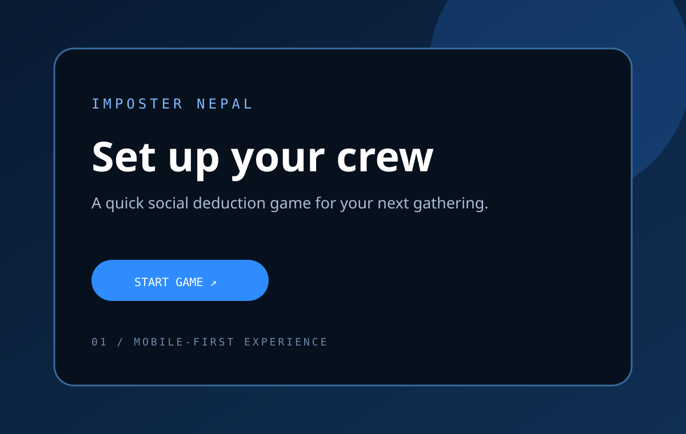
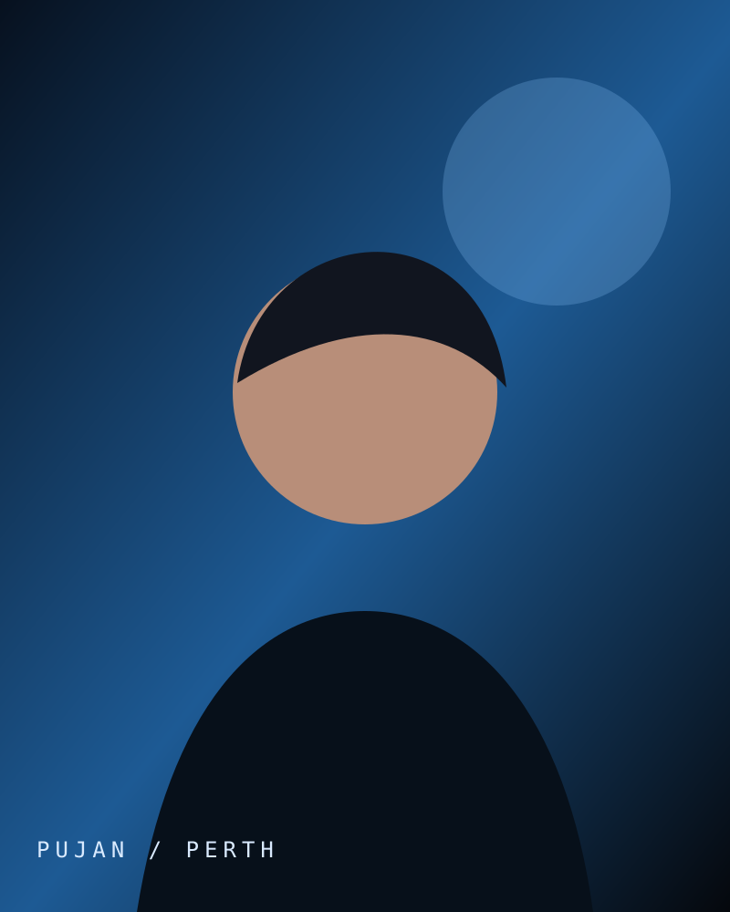
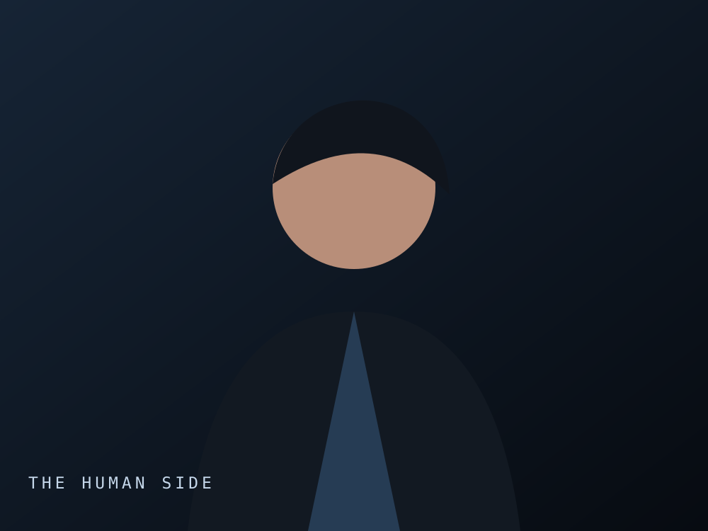

Imposter Nepal began as a simple idea: make a localised social deduction game that could run in a browser and work well when one phone is passed around a group. I wanted the setup to stay lightweight while still feeling polished enough for real-world play.
The experience is built around hidden roles, group discussion, and quick rounds. The design aims to keep the flow fast without overwhelming the players with too much information or UI friction.



WHAT I SOLVED
- Balanced a simple onboarding flow so players can set up a game with minimal effort.
- Kept hidden state private through a phone-passing model and controlled role sharing.
- Designed the UI to feel modern, readable, and easy to use on mobile screens.
OUTCOME
The project helped me explore real-world product thinking: clear rules, strong UX, and playful interaction design without unnecessary complexity. It also served as a practical example of my ability to translate an idea into a working browser-based experience.
NEXT PROJECT
Explore the portfolio →